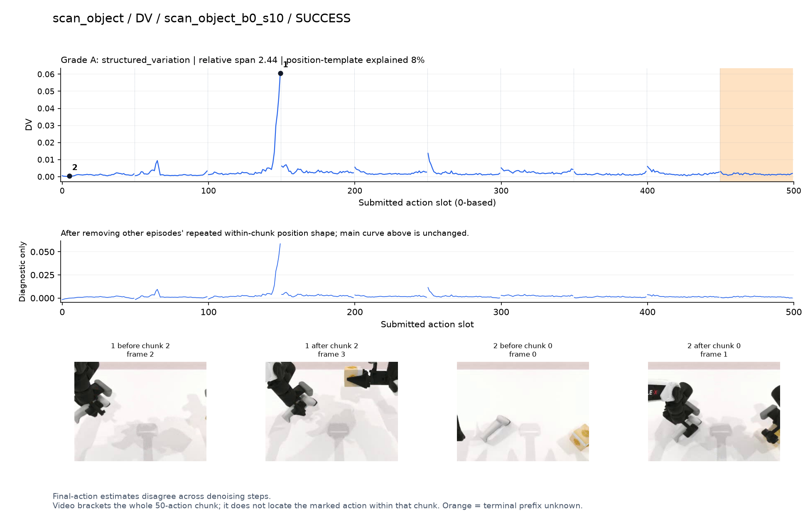
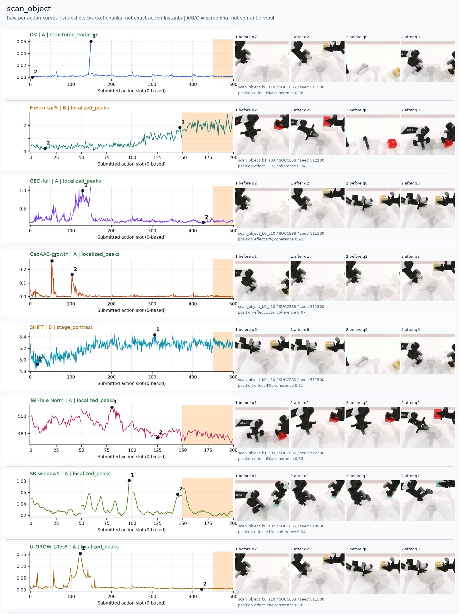
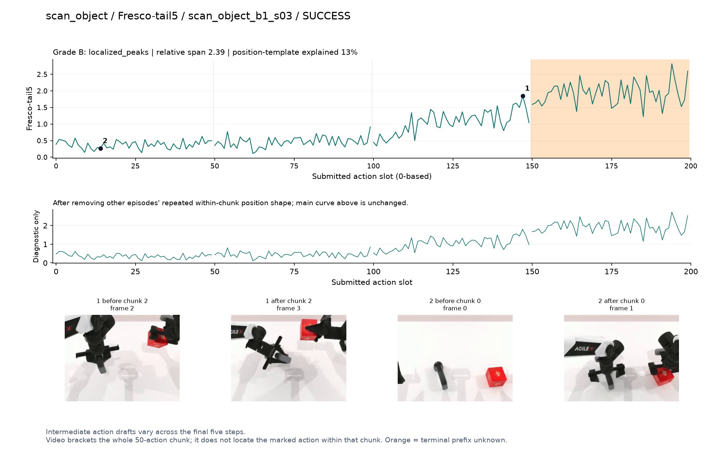
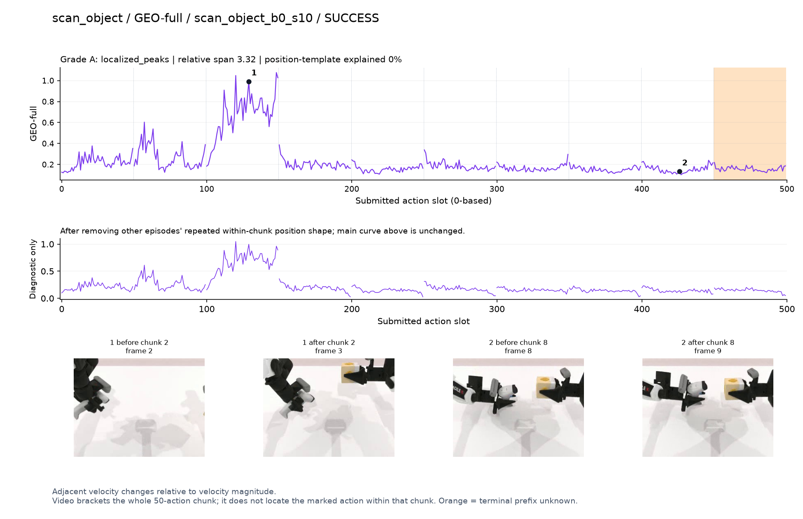
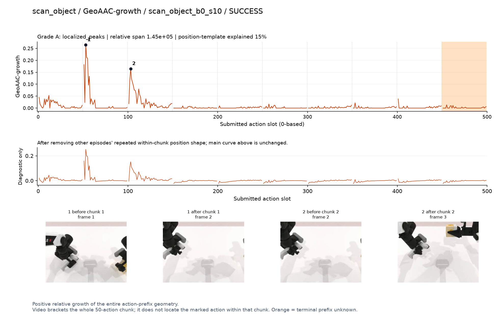
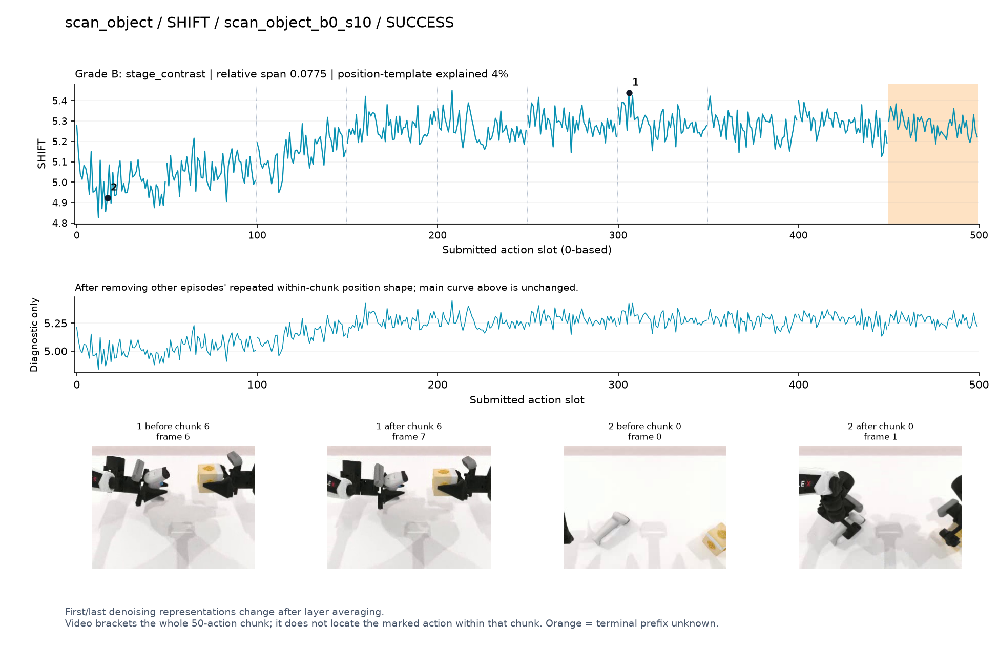
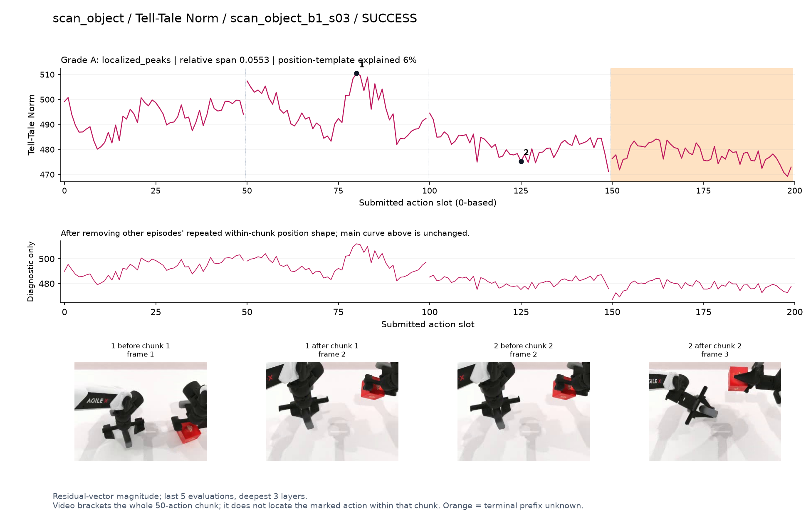
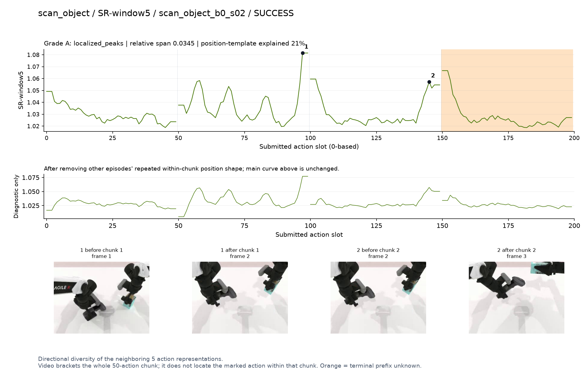
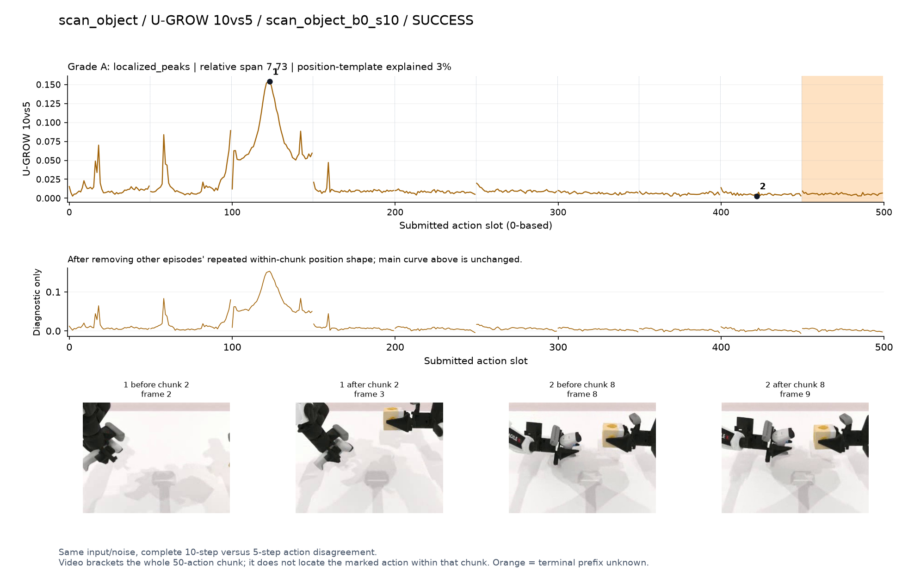

DV · A · structured_variation
Final-action estimates disagree across denoising steps.
SVG · metadata
Only pre/post chunk frames were recorded. A visible stage transition is a candidate explanation, not proof of a contact instant. Main plots preserve every action score.
人工看图复核：dv [candidate] 候选：q2扫描器在夹爪内转动、另一手持物时末段孤立峰。
fresco [weak] 弱阶段趋势：扫描器改变姿态后升高，路径长度混杂。
geo [candidate] 候选：同轨迹q2扫描器转向物体时宽高区。
geoaac [confounded] 谨慎：q1/q2抓取与调整段增长峰位于前缀开头。
shift [weak] 弱阶段趋势：拿起扫描器后基线升高，不能解释为扫描成功。
norm [candidate] 阶段候选：q1持扫描器准备转向时幅度高，q2转向后较低。
sr [confounded] 谨慎：q1/q2交界高峰，边界效应仍需区分。
ugrow [candidate] 候选：同DV轨迹q2扫描器朝目标转向时峰明显。

Final-action estimates disagree across denoising steps.
SVG · metadata
Intermediate action drafts vary across the final five steps.
SVG · metadata
Adjacent velocity changes relative to velocity magnitude.
SVG · metadata
Positive relative growth of the entire action-prefix geometry.
SVG · metadata
First/last denoising representations change after layer averaging.
SVG · metadata
Residual-vector magnitude; last 5 evaluations, deepest 3 layers.
SVG · metadata
Directional diversity of the neighboring 5 action representations.
SVG · metadata
Same input/noise, complete 10-step versus 5-step action disagreement.
SVG · metadata